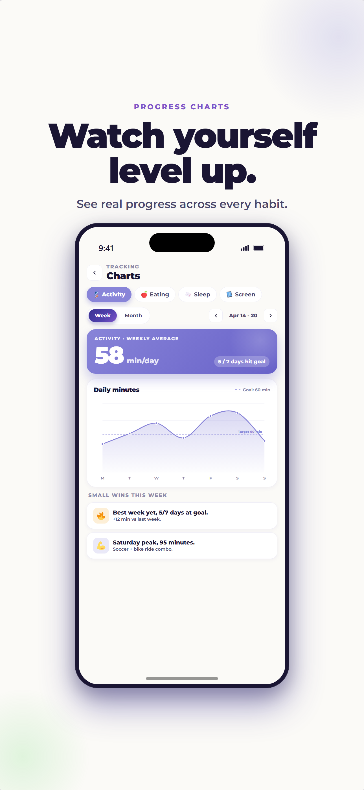

Start with one small, repeatable action across movement, eating, sleep, or screen balance. Let your child choose a detail, track attempts for one week, and adjust the environment instead of demanding perfection.
“Be healthier” is too big to act on, especially for a child. “Dance to two songs after homework” is clear. So is “choose one color to add at lunch,” “start pajamas at 8:00,” or “leave the tablet in the kitchen overnight.” Healthy habits become possible when families turn a broad goal into a repeatable action.
ProudMe focuses on four everyday pillars: activity, eating, sleep, and screen time. This guide explains what current public-health recommendations say and, more importantly, what those ideas can look like during a normal school week.
A quick note before you begin
This article offers general educational information, not individualized medical advice. Children differ in health, development, ability, sensory needs, culture, and family circumstances. Ask your child's pediatrician about recommendations that need to be adapted for them.
How to make a healthy habit easier to repeat
Families often begin with motivation: a new chart, a serious talk, or a promise that “Monday will be different.” Motivation can help, but the routine around the behavior matters more. If the shoes are hard to find, dinner is rushed, bedtime changes every night, or every screen transition becomes a surprise, a child has to use extra effort before the habit even begins.
Before asking for more willpower, reduce the friction:
- Make the cue visible. Put walking shoes by the door or the bedtime book on the pillow.
- Offer a small choice. “Bike or dance?” is easier to answer than “Do you want to exercise?”
- Attach it to something that already happens. Stretch after brushing teeth or charge devices when dinner begins.
- Keep the first version tiny. Ten repeatable minutes are more useful than an ambitious plan the family dreads.
- Name the effort. Specific feedback helps children understand what they did: “You stopped when the timer rang.”
Healthy habit 1: make movement enjoyable and easy to choose
The CDC recommends that children and adolescents ages 6 through 17 get 60 minutes or more of moderate-to-vigorous physical activity each day. Most should be aerobic, with vigorous, muscle-strengthening, and bone-strengthening activities included during the week.
That recommendation can sound like another hour to squeeze into an already full evening. It does not have to be a single workout. Recess, walking to school, active chores, dancing, playground time, biking, sports, tag, and short family movement breaks can all contribute.
Start with what your child already likes
A child who dislikes team sports may love swimming, climbing, skating, walking the dog, or making up dances. A child who says movement is boring may enjoy a destination—a park, a friend's house, or a scavenger hunt—more than “going for exercise.” The CDC specifically encourages activities that are varied, age-appropriate, and enjoyable.
“We have ten minutes before dinner. Do you want to walk to the corner and back, play catch, or pick two songs for a dance break?”
If 60 minutes feels far away
Do not turn the recommendation into an all-or-nothing grade. Begin by observing where movement already happens. Then add one reliable block: ten minutes after school, a walk after dinner, or active play before bath time. Progress becomes easier to see when the family tracks actions rather than judging whether a day was “healthy.”
Healthy habit 2: build variety without making food a battle
USDA MyPlate encourages families to offer a variety of fruits, vegetables, grains, protein foods, and dairy or fortified soy alternatives. The useful word is offer. Parents and caregivers decide what foods are available and when; children still have preferences, appetites, and learning curves.
A balanced eating pattern is built over time. One beige dinner does not define a child's diet, and one “perfect” plate does not create a habit.
Give children a role before the food reaches the plate
Kids can choose a fruit at the store, rinse produce, tear lettuce, stir ingredients, set the table, or name a family side dish. The USDA recommends involving children in shopping and preparation. Participation creates familiarity without requiring a child to taste something on command.
Use neutral language
Calling foods “good,” “bad,” “clean,” or “junk” can turn eating into a moral score. More useful language describes what food does or how it fits: “This yogurt has protein,” “These berries add a color,” or “Cookies are fun foods, and tonight we are also having dinner that helps us stay full.”
“You don't have to finish it. Would you like the cucumber on your plate, in a small tasting bowl, or left on the serving dish?”
For children with allergies, medical dietary needs, feeding difficulties, strong sensory aversions, or concerns about growth, use guidance from a pediatrician or qualified feeding professional rather than a general habit plan.
Healthy habit 3: give sleep a predictable rhythm
Children ages 6 through 12 generally need 9 to 12 hours of sleep per 24 hours. Sleep needs vary within that range, but a regular routine gives a child enough opportunity to get the sleep their body needs.
The American Academy of Pediatrics recommends treating sleep as a family priority, keeping a regular daily rhythm, and turning screens off at least one hour before bedtime. It also recommends keeping screens out of children's bedrooms at night.
Work backward from wake-up time
If school requires a 6:45 a.m. wake-up, bedtime cannot be chosen in isolation. Work backward to create enough sleep opportunity, then reserve time for the routine itself. A child who needs 30 minutes to shower, find pajamas, brush teeth, and settle with a book needs that time before lights out—not after it.
Use the same sequence even when the exact time shifts
A predictable order can be more realistic than a perfectly fixed minute: snack, wash up, pajamas, reading, lights out. On a busy night the steps may be shorter, but the sequence still signals what comes next.
“The routine starts in ten minutes. Do you want to choose the book first or put your device on the charger first?”
Talk with a pediatrician if your child regularly snores loudly, has pauses in breathing, struggles persistently to fall or stay asleep, is very sleepy during the day, or if sleep problems are affecting school or family life.
Healthy habit 4: aim for balanced screen use, not constant negotiation
Screen habits are about more than a stopwatch. The American Academy of Pediatrics encourages families to make a media plan based on the child's age, needs, the quality and context of media, and what screen use may be crowding out.
Useful family boundaries can include screen-free meals, devices outside bedrooms at night, one screen at a time, autoplay turned off, and protected time for sleep, movement, homework, hobbies, and face-to-face connection.
Decide the transition before the screen starts
Many conflicts happen because “time to stop” arrives without warning. Before a child begins, agree on the stopping point: the end of an episode, one game round, or a visible timer. Give a reminder before the transition and know what comes next.
Make the rule apply to adults too
A child notices when the dinner table is screen-free for them but not for everyone else. The AAP's family media guidance emphasizes adult modeling. A shared charging spot or device basket makes the boundary visible and reduces the sense that the child is being singled out.
“When this round ends, the tablet goes on the kitchen charger. Then you can choose drawing, music, or helping me make the snack.”
A realistic one-week starter plan
Trying to change all four areas at once usually creates more reminders than success. Pick one anchor habit for the week, then use the other pillars as optional extras.
- Choose the anchor. Pick the routine causing the most friction or offering the clearest opportunity—not the one that sounds most impressive.
- Define the smallest action. “Move more” becomes “walk for ten minutes after snack.”
- Choose the cue. Tie it to a reliable event such as arriving home, finishing dinner, or beginning pajamas.
- Let your child choose one detail. They can choose the music, route, food color, book, or charging location.
- Track attempts for seven days. A check mark means “we tried,” not “the whole day was perfect.”
- Review without blame. Ask what made the habit easier and what got in the way.
- Keep, shrink, or replace it. A plan that does not fit is information. Adjust the environment before blaming motivation.
Notice effort, not perfection
A missed day does not erase progress. Name the action your child took: “You remembered your wind-down routine,” “You tried a new color,” or “You stopped when the timer rang.” Specific encouragement shows them what they can repeat.
What to do when your child resists
Resistance does not automatically mean the child is lazy or the rule is wrong. The task may be unclear, too large, poorly timed, physically uncomfortable, or outside the child's current skill level.
- If they forget: strengthen the cue instead of adding a lecture.
- If they argue: reduce the number of decisions made in the moment.
- If they avoid the activity: offer a different form that serves the same purpose.
- If the routine creates distress: pause and ask what part feels hard.
- If concerns persist: bring specific observations to the child's pediatrician, teacher, counselor, dietitian, or other appropriate professional.
Frequently asked questions about healthy habits for kids
Should we work on all four habits at once?
Usually not. Start with one action that would make family life noticeably easier or healthier. Add another only after the first feels familiar.
What if my child misses several days?
Restart without punishment. Make the action smaller, improve the cue, or choose a version your child enjoys more.
Should healthy habits earn rewards?
Small celebrations can make progress visible, but avoid turning food, movement, or body size into a moral score. Praise effort and use nonfood rewards when a reward is helpful.
How do I know when to ask a professional?
Ask a pediatrician when you have concerns about growth, eating, sleep, pain, breathing, development, mood, or a child's ability to participate safely. General online guidance cannot account for an individual child's medical needs.
Sources and further reading
Build one small habit with ProudMe
Choose one manageable action, notice the attempt, and keep the conversation going. ProudMe supports healthy-habit reflection; it does not provide medical care or guarantee behavior change.
